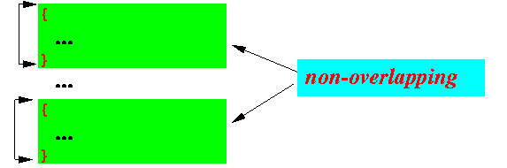
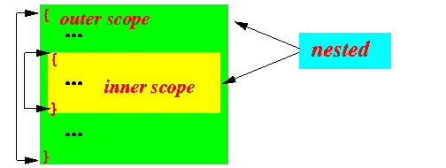
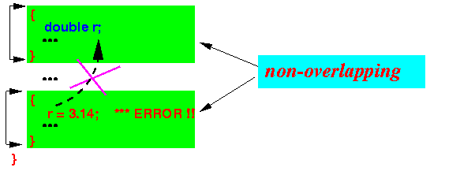
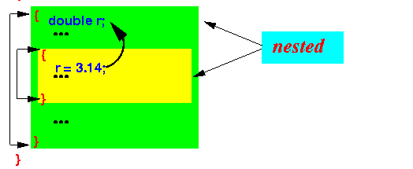
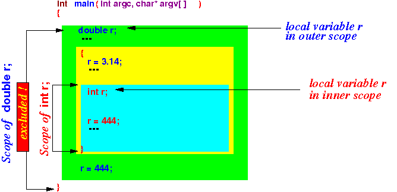
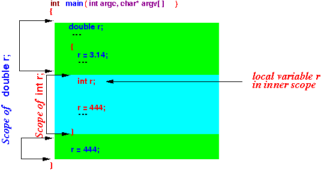
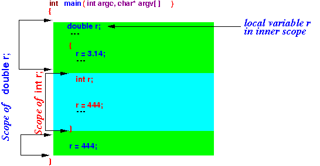
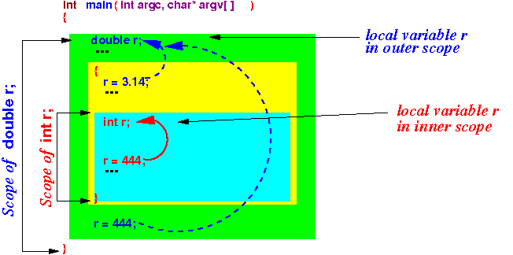
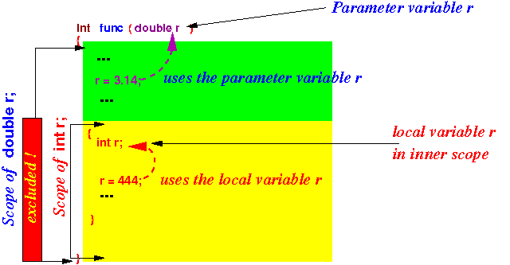

- Program scope:
(See:
cs170 material on scoping )
- A program scope is delimited by a pair of (matching) braces { .... }
- There are 2 special scope
configurations formed by
multiple pairs of braces:
- Non-overlapping scopes:

- Nested scopes:

- Non-overlapping scopes:
-
Scoping rules
for the
2 special scope configurations:
- A variable defined inside
one disjoint scope
is not accessible
inside the other disjoint scope
Illustrated:

- A variable defined inside the
outer scope
is accessible
inside the inner scope
Illustrated:

- A variable defined inside
one disjoint scope
is not accessible
inside the other disjoint scope
- Scope of Local variables
in C:
- Starts at the location
where the
Local variable
is defined
- Ends at the
end of the
enclosing scope
- Except:
- Inside an inner scope where you define another local variable with same name as an outer local variable !!!
- Starts at the location
where the
Local variable
is defined
- Example:
 Explanation:
- There are 2 different
local variables
defined inside the main()
function:
- double r is defined
inside the outer scope
- int r is defined inside the inner scope
Note:
- The inner local variable defintion is illegal in Java; but perfectly OK in C !
- double r is defined
inside the outer scope
- The scope of the
inner variable definition
(int r) is the
cyan colored area in the
following figure:

- The scope of the
outer variable definition
(double r) is the
green colored area:

- Consequently,
the name r
refers to
different local variables
in different locations
inside the function:

- There are 2 different
local variables
defined inside the main()
function:
- Example:
#include <stdio.h> int main( int argc, char* argv[] ) { /* Outer scope */ double r = 3.14; /* (1) */ printf( "1. r = %lf\n", r ); /* Access r(1) */ { /* Inner scope (a new scope !) */ printf( "2. r = %lf\n", r ); /* Access r(1) */ double r = 4.444; /* (2) */ printf( "3. r = %lf\n", r ); /* Access r(2) */ } printf( "4. r = %lf\n", r ); /* Access r(1) */ }Result:
1. r = 3.140000 2. r = 3.140000 3. r = 4.444000 4. r = 3.140000
- Example Program:
(Demo above code)

- Prog file: /home/cs255001/demo/C/set1/scoping1.c
How to run the program:
- To compile: gcc scoping1.c
- To run: ./a.out
- Java does
not allow a
variable with the same name
to be defined inside
an inner scope
So this example is illegal in Java:
public class scoping1 { public static void main( String[] args ) { double r = 3.14; { /* Inner scope (a new scope !) */ int r = 4; /* Illegal in Java */ } } }Gosling (designer of Java) thinks that variables with the same name inside one function is too confusing....
- Here's a true story: I know a professor who teaching a compiler construction course who was confused by Java's scoping rule....
- Example Program:
(Demo above code)
- Prog file: /home/cs255001/demo/C/set1/scoping1.java
How to run the program:
- To compile: javac scoping1.java
- Look for this error message:
scoping1.java:12: error: variable r is already defined in method main(String[]) int r = 4; /* Illegal in Java */ ^ 1 error
- Scope of Parameter variables
in C:
- Starts at the beginning of
the function
(in which the Local variable
is defined
- Ends at the
end of the
function
- Except:
- Inside an inner scope where you define another local variable with same name as an outer local variable !!!
- Starts at the beginning of
the function
(in which the Local variable
is defined
- Example:

- Example in C:
void func( double r ) { { /* Start of a new scope */ /* NOTE: without this inner scope, you will get error: 'r' redeclared !!! */ printf( "1. r = %lf\n", r ); /* Access parameter r */ double r = 4.444; /* (1) */ printf( "2. r = %lf\n", r ); /* Access r(1) */ } } int main( int argc, char* argv[] ) { func( 3.14 ); // Pass 3.14 into parameter variable r }Result:
1. r = 3.140000 2. r = 4.444000
- Example Program:
(Demo above code)
- Prog file: /home/cs255001/demo/C/set1/scoping2.c
How to run the program:
- To compile: gcc scoping2.c
- To run: ./a.out
- Fact:
- There is no way/need to declare a local variable or a parameter variable
Reason:
- A local/parameter variable is
only accessible
inside the
function where it is
defined
- Since the local/parameter variable is not accessible in other functions, there is no need to declare them in other places....